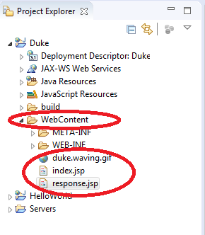
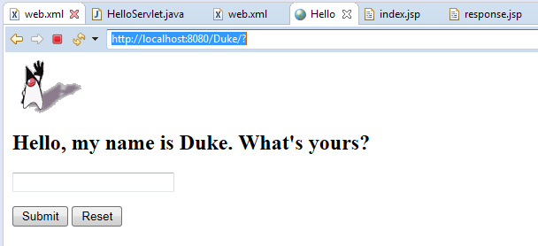
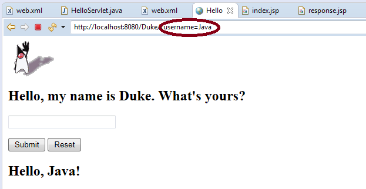

Tutorial 6. Duke: Our First JSP
by Dr. Wenjie He
1. Run the example
In this tutorial, we will learn a few basic concepts about the Java JSP technology. This example has two JSP files
and one image file. Note: There is no Java
.java file in this simple example.
You can find the source code of this example in the folder
Tutorial6_DukeFirstJSP/SourceCode. In this folder, there are
three files:
index.jsp, response.jsp and
duke.waving.gif. The file
index.jsp is the
welcome file,
and this file plays several roles:
- User's interface
- Data processing file
- Display the response result
The other JSP file
response.jsp is used to embed a piece of dynamic content in the response result.
The procedure to run the example is similar to that of our other tutorials. When you do it, pay attention to the
following points:
- When you create a Dynamic Web Project, generate the web.xml in one of the windows.
Since our index.jsp is already in the welcome file list, we do not need to do anything
in web.xml.
- Copy the files using drag-and-drop for all the three files in the folder Tutorial6_DukeFirstJSP/SourceCode
onto the WebContent node of your Duke project. You should see your project as follows,

- You do not need to do anything on the code. You can run the project now.
After you start the project, you will see a page as follows,

Then you enter a string in the input field, and click the
Submit button. You will see the result as follows,

2. Understand the code
Let us try to understand the two JSP files.
2.1. Understand the code index.jsp
This file is the welcome file of this web application. It is also used to get the user's input. The user's input data
will be sent to this same file for processing, because a JSP file can use
embedded Java code to do dynamic data processing.
Code Listing: index.jsp
1
2
3
4
5
6
7
8
9
10
11
12
13
14
15
16
17
18
19
20
21
22
23
24
25
26
27
|
|
<%@page contentType="text/html"%>
<%@page pageEncoding="UTF-8"%>
<!DOCTYPE HTML PUBLIC "-//W3C//DTD HTML 4.01 Transitional//EN"
"http://www.w3.org/TR/html4/loose.dtd">
<html>
<head><title>Hello</title></head>
<body bgcolor="white">
<img src="duke.waving.gif">
<h2>Hello, my name is Duke. What's yours?</h2>
<form method="get">
<input type="text" name="username" size="25">
<p></p>
<input type="submit" value="Submit">
<input type="reset" value="Reset">
</form>
<%
String name = request.getParameter("username");
if (name != null) {
%>
<%@include file="response.jsp" %>
<%
}
%>
</body>
</html>
|
- (Lines 1-2) In these two lines we use the page directive of JSP. We will discuss this JSP element
more in our lectures. Here we only need to know that we specify some response header information for the return page.
Regarding the response header, we need to connect it to a servlet where we also prepare for a response with this type
of header information.
- (Line 12) Here we use the get method. Recall the properties we discussed before for the get method.
Actually we should use post method here, because we submit an HTML form. Here I think the reason to use
the get method is for learning purpose.
You may also notice that the <form> tag here does not have the action attribute, which usually is
used to specify the backend data processing file. If this action attribute is missing, then the current file
(here index.jsp) is the data processing file for this HTML form.
- (Lines 18-25) This block of code is the embedded Java code for the dynamic feature. We call it JSP scriptlet.
The JSP scriptlet has many properties, and we will discuss them in our lectures.
- (Line 19) The request here is a JSP implicit object (also called implicit variable).
It is created by the server, and you just use it directly. Here we use it to retrieve the parameter value for
username.
- (Line 20) In Java, when you use an object, make sure that you check if it is null. If you forget
this step, you may get a runtime error. (Think about when the object name takes the null value.)
- (Line 22) Here we use the JSP include directive. We will include the result produced by the
response.jsp page right at this line.
2.2. Understand the code response.jsp
This file is very simple. It only contains one line, which provides part of the content for another JSP page.
Code Listing: response.jsp
|
|
<h2><font color="black">Hello, <%= request.getParameter("username") %>!</font></h2>
|
- (Line 1) Here we use the implicit object request again. We also use another JSP element
called JSP expression denoted by <%= ... %>. We will learn many properties for the JSP expressions
in our lectures.
==========The End==========